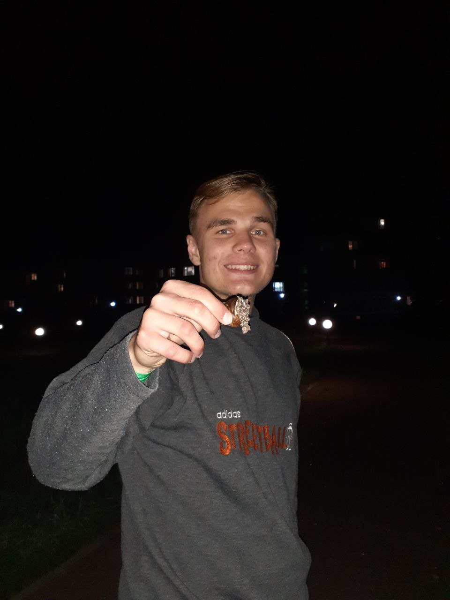

Hello everyone! My name is Maxim, I am 21 years old and I am from St. Petersburg, Russia, now I live in Armenia. I like to play guitar, watch movies and TV shows, spend time with my family, I recently got married.
I am very grateful to BYU-Idaho for the opportunity to study remotely, combining work with study, and for opportunity to get an education. I plan to get a bachelor's degree.
I have been in the Church since I was born, I recently returned from a Mission. My favorite quote is by President M. Russell Ballard: “I am so thoroughly convinced that if we don’t set goals in our life and learn how to master the techniques of living to reach our goals, we can reach a ripe old age and look back on our life only to see that we reached but a small part of our full potential. When one learns to master the principles of setting a goal, he will then be able to make a great difference in the results he attains in this life". My favorite verse is 3 Nephi 11:14 "Arise and come forth unto me, that ye may thrust your hands into my side, and also that ye may feel the prints of the nails in my hands and in my feet, that ye may know that I am the God of Israel, and the God of the whole dearth, and have been slain for the sins of the world."
Have a nice day:)